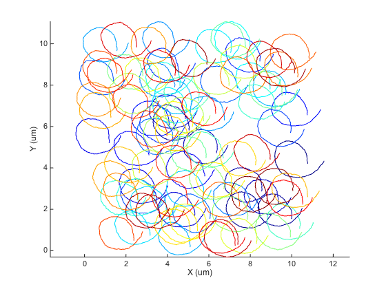
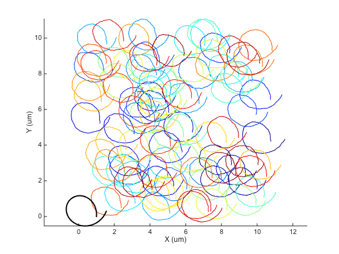
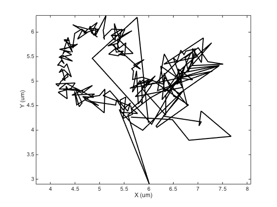
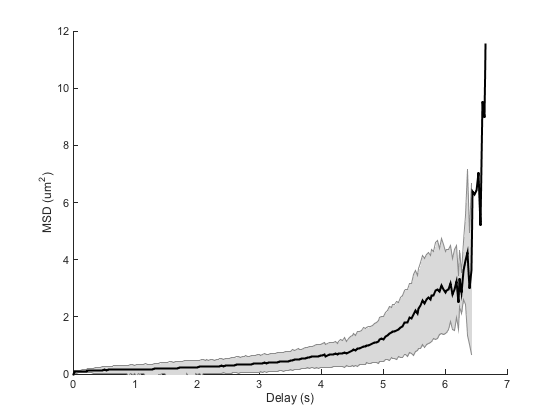
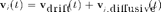
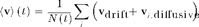
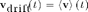
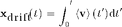
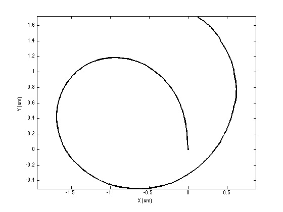

Correcting for drift.
Contents
Drift is the phenomenon that will torment you during MSD analysis. Drift will corrupt your data and lead you to bad conclusions.
There are several well-known sources of drift, the most common being the drift of the microscope stage used for imaging. Depending on the thermal state of the room and the microscope, a small or not-so-small creeping movement will be added to all your particle trajectories. If it is large enough, it will make your MSD curves look like a parabola, typical of a transported movement. In Biology, if you image cells, you may also encounter nasty side effects of phototoxicity: Given that the light excitation is strong enough and for long enough (this is required by the MSD analysis: you need at the same time to image the particles for long enough, with a frame interval short enough, which in turns imposes a strong light power illumination), the cell may contract, dragging the particle with it, ang giving them a transported-like motion.
close all clear all clc
Simulating drift.
@msdanalyzer offers several methods to deal efficiently with drift. Let's simulate particles that normally display a purely diffusive behavior, but whose trajectories are corrupted by drift. The drift we will simulate is homogeneous (at any given time point, it is the same for all particles), but vary in time. It is also of large magnitude compared to the typical Brownian motion.
SPACE_UNITS = 'µm'; TIME_UNITS = 's'; N_PARTICLES = 100; N_TIME_STEPS = 200; N_DIM = 2; % 2D SIZE = 10; % µm D = 1e-3; % µm^2/s dT = 0.03; % s k = sqrt(N_DIM * D * dT); % Drift parameters: a circle moving forward drift_time = (0 : N_TIME_STEPS-1)' * dT; drift_time = msdanalyzer.roundn(drift_time, 3); drift_pos = [ 1e-1*drift_time + 1*cos(drift_time), 1e-1*drift_time + 1*sin(drift_time) ]; drift = [ drift_time drift_pos]; % Generate tracks tracks = cell(N_PARTICLES, 1); for i_spot = 1 : N_PARTICLES % Time time = (0 : N_TIME_STEPS-1)' * dT; % Initial position X0 = SIZE .* rand(1, N_DIM); % Integrate uncorrelated displacement dX = k * randn(N_TIME_STEPS, N_DIM); %#ok<*UNRCH> dX(1, :) = X0; X = cumsum(dX, 1); % Add drift X = X + drift_pos; % Store tracks{i_spot} = [ time X]; end
Visualize drift.
We can use the @msdanalyzer class to visualize what we did:
ma = msdanalyzer(2, 'um', 's'); ma = ma.addAll(tracks); [hps, ha] = ma.plotTracks; ma.labelPlotTracks
A faulty analysis.
It's rather extreme, as you can see. Let's see what would give an inconsiderate analysis:
ma = ma.computeMSD; figure ma.plotMeanMSD(gca, true); ma.fitMeanMSD
Computing MSD of 100 tracks... Done. Estimating D through linear weighted fit of the mean MSD curve. D = 2.022e-01 with 95% confidence interval [ 1.800e-01 - 2.244e-01 ]. Goodness of fit: R² = 0.875.

We get a wrong value of D and a parabola shape for the beginning of the MSD curve, typical of directed motion. The log-log analysis we saw before is misled as well:
ma = ma.fitLogLogMSD; r2fits = ma.loglogfit.r2fit; alphas = ma.loglogfit.alpha; R2LIMIT = 0.8; % Remove bad fits bad_fits = r2fits < R2LIMIT; fprintf('Keeping %d fits (R2 > %.2f).\n', sum(~bad_fits), R2LIMIT); alphas(bad_fits) = []; % Echo results fprintf('alpha = %.2f ± %.2f (mean ± std, N = %d).\n', ... mean(alphas), std(alphas), numel(alphas));
Fitting 100 curves of log(MSD) = f(log(t)), taking only the first 25% of each curve... Done. Keeping 100 fits (R2 > 0.80). alpha = 1.91 ± 0.01 (mean ± std, N = 100).
We get an alpha value close to 2, again typical of directed motion, which is completely wrong.
Dealing with known drift.
The easiest way to deal with drift is to assume you know perfectly what it is quantitatively. This lucky situation arises when you managed to track an immobile particle during the acquisition, typically a very large bead firmly attached to the sample carrier.
In that case, you can feed this drift trajectory to @msdanalyzer, and it will correct the other trajectories with it. @msdanalyzer can interpolate missing drift data points, as lonf as they are "inside" the drift trajectory. If the drift is sampled between t1 and t2, it cannot correct for particles that are sampled at t<t1 or t>t2. I leave you to read the help section (help msdanalyzer.computeDrift) for details.
You need to feed the drift coordinates formatted like for tracks: a double array arranged as [ Ti Xi Yi ... ]. In our simulation, that would be the drift variable. Let's erase 10% of its data points, to see how @msdanalyzer manages:
to_erase = rand( size(drift,1), 1) < 0.1;
to_erase(1, end) = false; % ensure we do not erase the last and first ones
drift(to_erase, :) = [];
The function to use to pass the drift coordinates is the same whatever the correction method to use: computeDrift. You just need to specify a string switch to indicate what one you want to use. In our case, the switch is 'manual', and the function call is the following:
ma = ma.computeDrift('manual', drift);
You need to assigne the result like this: ma = ma.something() because the method updates a field of the object. There are extra options to specify the interpolation method. Again, visit the help page. Here is how to plot the drift as seen by msdanalyzer
ma.plotDrift(ha) % to plot it in the track figure
 The interpolated drift array is stored in the msdanalyzer.drift field of the object. Notice that we have here the interpolated value for all the common time point of the particle trajectories:
size(drift) % measured drift
ans = 171 3
size(ma.drift) % interpolated drift
ans = 200 3
This means that it is wiser to feed the particles trajectories with addAll first, then feed the drift coordinates.
Now that the object is given a drift array, it will use it automatically in subsequent calculation. For instance:
ma = ma.computeMSD; ma.fitMeanMSD
Computing MSD of 100 tracks... Done. Estimating D through linear weighted fit of the mean MSD curve. D = 1.011e-03 with 95% confidence interval [ 1.006e-03 - 1.016e-03 ]. Goodness of fit: R² = 1.000.
Now the value we get for D is much more accurate. The log-log fit is also correct now:
ma = ma.fitLogLogMSD; r2fits = ma.loglogfit.r2fit; alphas = ma.loglogfit.alpha; R2LIMIT = 0.8; % Remove bad fits bad_fits = r2fits < R2LIMIT; fprintf('Keeping %d fits (R2 > %.2f).\n', sum(~bad_fits), R2LIMIT); alphas(bad_fits) = []; % Echo results fprintf('alpha = %.2f ± %.2f (mean ± std, N = %d).\n', ... mean(alphas), std(alphas), numel(alphas));
Fitting 100 curves of log(MSD) = f(log(t)), taking only the first 25% of each curve... Done. Keeping 100 fits (R2 > 0.80). alpha = 0.97 ± 0.13 (mean ± std, N = 100).
So everything is now looking good. But of course, this is because we dealt with the trivial case of knowing the exact drift trajectory: We used the same variable to simulate a drift and to correct for it. Real experimental measures might not be so ideal. Let's see now how to deal with drift when you cannot measure it directly.
Particle centroid correction.
The next two methods can infer drift just from the particle trajectories. Given of course that they are in sufficient number, and sampled properly. The centroid method simply computes the average position over all particles at each time point, and treat this as the drift position. Let's see how it behaves with our current simulation:
ma = ma.computeDrift('centroid'); % note: no extra parameters. ma = ma.computeMSD; ma.fitMeanMSD
Computing MSD of 100 tracks... Done. Estimating D through linear weighted fit of the mean MSD curve. D = 1.004e-03 with 95% confidence interval [ 9.995e-04 - 1.008e-03 ]. Goodness of fit: R² = 1.000.
It seems to work rather well. But let's be frank, this method is the least robust. It greatly depends on the number of particles to be the same at every time point. As soon as there is missing detections, particle trajectories starting or finishing at different time points, it fails. Check this simulation, where we treat these cases:
close all clear all % Probability to miss a detection. P_GAPS = 0.25; N_PARTICLES = 300; % 1000 N_TIME_STEPS = 200; N_DIM = 2; % 2D SIZE = 10; % µm D = 1e-3; % µm^2/s dT = 0.03; % s k = sqrt(N_DIM * D * dT); % Simulate drift drift_time = (0 : N_TIME_STEPS-1 + floor(N_TIME_STEPS / 4))' * dT; drift_time = msdanalyzer.roundn(drift_time, 3); drift_pos = [ 1e-1*drift_time + 1*cos(drift_time), 1e-1*drift_time + 1*sin(drift_time) ]; drift = [ drift_time drift_pos]; % Tracks generation tracks = cell(N_PARTICLES, 1); for i_spot = 1 : N_PARTICLES % Time: each particle is detected for a random duration, starting from % a random time. time_steps = 10 + max(1, round(N_TIME_STEPS/2 + N_TIME_STEPS/4*randn)); time = (0 : time_steps-1)' * dT + dT * floor(N_TIME_STEPS / 4 * rand); time ( time >= max(drift_time) ) = []; % delete data not within drift range time = msdanalyzer.roundn(time, 3); % Avoid floating point accuracy problems imperfectly % Initial position X0 = SIZE .* rand(1, N_DIM); % Integrate uncorrelated displacement dX = k * randn(numel(time), N_DIM); dX(1, :) = X0; X = cumsum(dX, 1); % Add drift % This is hack to retrieve automatically in a vectorized % fashion all the time indices in the drift vector that are in the % position vector. [~, index_in_drift_time, index_in_time] = intersect(drift_time, time); X = X + drift_pos(index_in_drift_time, :); % Simulate missing frames missing_frames = rand(numel(time), 1) < P_GAPS; X(missing_frames, :) = []; time(missing_frames) = []; % Store tracks{i_spot} = [ time X]; end ma = msdanalyzer(2, 'um', 's'); ma = ma.addAll(tracks);
The tracks are much more messy. Let's see what drift we can infer from them:
ma = ma.computeDrift('centroid');
figure
ma.plotDrift
ma.labelPlotTracks
 We are indeed likely to expose ourselves to troubles with this method. The drift calculated is clearly far from what we expect, notably at the beginning of the track and at its end, where these is the smallest number of particles. This is confirmed numerically:
ma = ma.computeMSD; figure ma.plotMeanMSD(gca, true) ma.fitMeanMSD
Computing MSD of 300 tracks... Done. Estimating D through linear weighted fit of the mean MSD curve. D = 2.259e-02 with 95% confidence interval [ 2.199e-02 - 2.319e-02 ]. Goodness of fit: R² = 0.991.
This is completely wrong.
So this method is a little bit like a toy: it works only for cases that are seldom seen experimentally. You would need to have the same particles detected at the same times, with no detection missing.
Drift correction using velocity correlation.
The following method corrects these problems, using a simple observation. Since we are dealing with homogeneous drift, the displacement due to the drift will be the same for all particles at any given point. On top of this common displacement, each particle will undergo a displacement due to the Brownian motion, which we are trying to sample. If we write this with equations, we get for the velocity if the |i|th particle:

If we now average over all particles at fixed time t:

But the diffusive movement of the particles are uncorrelated from one particle to another. If the particles are in a great enough number, we can therefore assume that the second term in the sum will cancel to 0. Since the first term in the sum does not depend on i, we can write:

To infer the displacement due to the drift, we simply integrate this velocity over time:

Let's see how it works in practice:
ma = ma.computeDrift('velocity');
figure
ma.plotDrift
ma.labelPlotTracks
 This looks way better. The drift resembles what we could infer from the tracks. If we quantify the error in the drift estimation, we get:
error = drift(1:N_TIME_STEPS/2, 2:3) - ma.drift(1:N_TIME_STEPS/2, 2:3);
std(error) % µm
ans =
0.0053 0.0077
We make a localization mistake of about 20 nm each time. The problem is that this is of the same order of magnitude than the typical particle movement k. We must therefore expect still some discrepancy in the numerical estimates. Still:
ma = ma.computeMSD; figure ma.plotMeanMSD(gca, true) ma.fitMeanMSD
Computing MSD of 300 tracks... Done. Estimating D through linear weighted fit of the mean MSD curve. D = 9.623e-04 with 95% confidence interval [ 9.590e-04 - 9.655e-04 ]. Goodness of fit: R² = 1.000.

The results are well acceptable. I have found out that this method is relatively robust, as soon as you have enough particles to average. So on top of sampling their motion on short time scales for long durations, we must also acquire plenty of them at once, to be able to correct well for drift.
Non-homogeneous drift.
When you image live cells in fluorescence microscopy, a high illumination power will damage them. Most of the time they will shrink, which will create a drift of the particles towards the center of the cell. This drift is non-homogeneous: each particle has a difference drift velocity vector. I have no good way to deal with this case, for this drift is not distinguishable from a directed movement of the particles towards the center of the cell. So to the list of requirements for a proper image acquisition needed for MSD analysis, we must also add imaging conditions that are non phototoxic, that is: low light.
Such is the scientist life....